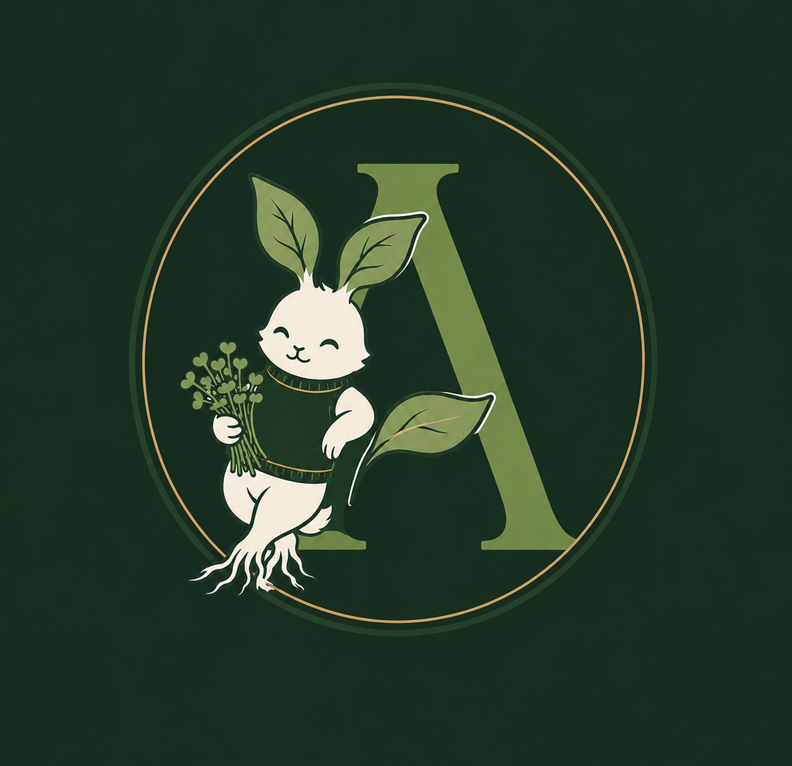

ArcaNova builds controlled-environment cultivation systems for high-value specialty crops — combining plant biotechnology, precision engineering, and circular agriculture to grow what conventional farming cannot. We serve premium buyers, researchers, and partners seeking reliable, science-backed quality, year-round, regardless of climate.
Not crops. Not containers. Not technology. At the deepest level, we sell conviction with roots — the assurance that limits can be challenged, redesigned, and broken, that scarcity can be solved, that even in a changing world, life can still be grown. Anywhere.
The conviction that we do not have to accept things just because they have always been that way.
That good food should not depend on luck, weather, distance, or season. That a chef should never have to say "we cannot get it." That a country should not have to depend on someone far away to feed its people. That farmers, scientists, and builders can work together to build something cleaner, closer, and more reliable. That a wasted grape skin, a spent lavender stalk, or a forgotten root pulp does not have to stay waste, when it can become food.
These are how we deliver on that conviction — they are not the reason it matters.
Genuine wasabi shows how extreme that gap has become. Commercial wasabi farming across the entire European continent produces well under ten metric tonnes a year, concentrated in a handful of farms in the UK, Switzerland, and the Azores. Fresh rhizomes lose quality quickly after harvest, making reliable local production essential — yet Europe remains near-totally dependent on imports from Japan, Taiwan, and New Zealand, at prices that put authentic wasabi out of reach for most kitchens.
Specialty and functional mushrooms — shiitake, oyster, lion's mane, cordyceps — show rising demand across Europe, while domestic production stays constrained by labor, climate, cost, and substrate availability.
At the same time, France generates large volumes of underutilized industrial byproducts every year. ArcaNova turns regional byproducts into high-performance cultivation substrates — enabling local mushroom production while cutting waste and transport, and supporting a circular bioeconomy.
This is not a temporary shortage. It is a structural one — and it is precisely the gap ArcaNova is built to close.
Premium buyers — chefs, specialty retailers, wellness and nutraceutical brands — consistently struggle to source high-value specialty crops that meet real standards of freshness, authenticity, and quality. Conventional agriculture and standard greenhouses are constrained by climate, geography, and long, fragile supply chains.
The result is produce that travels too far, arrives too late, or simply isn't authentic to begin with. Climate volatility and rising demand for traceable, sustainably produced food are now pushing buyers and policymakers toward local, resilient alternatives — alternatives that, until now, haven't existed at the quality level premium markets actually require.
ArcaNova closes Europe's premium crop supply gap through two interconnected engines — production and R&D, feeding each other in a continuous loop.
Commercial revenue through two pathways operating on ArcaNova's Controlled Environment Agriculture (CEA) platform.
Precision-controlled CEA systems produce premium microgreens and specialty crops year-round, independent of weather or season — with wasabi and cordyceps next on the roadmap.
French industrial byproducts — lavender stalks, wine lees, sunflower hulls, chicory pulp — become substrate for premium mushrooms. Byproduct in, mushroom out, substrate returned to the land. Original work under formal IP protection in France.
Working with academic, scientific, and industry partners, the R&D Engine continuously improves crop performance and substrate formulations — insights that strengthen production, while production data accelerates research.
Whether you are a premium buyer, investor, research partner, or simply curious — we would love to hear from you.